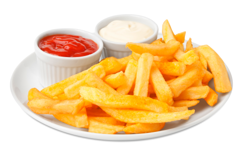

French fries[a] (or simply fries, also known as chips[b] among other names[c]) are batonnet or julienne-cut[3] deep-fried potatoes of disputed origin from Belgium or France. They are prepared by cutting potatoes into even strips, drying them, and frying them, usually in a deep fryer. Pre-cut, blanched, and frozen russet potatoes are widely used, and sometimes baked in a regular or convection oven; air fryers are small convection ovens marketed for frying potatoes.

French fries are served hot, either soft or crispy, and are generally eaten as part of lunch or dinner or by themselves as a snack, and they commonly appear on the menus of diners, fast food restaurants, pubs, and bars. They are often salted and may be served with ketchup, vinegar , mayonnaise, tomato sauce, or other sauces. Fries can be topped more heavily, as in the dishes of poutine, loaded fries or chili cheese fries. French fries can be made from sweet potatoes instead of potatoes. A baked variant, oven fries, uses less or no oil.[4]